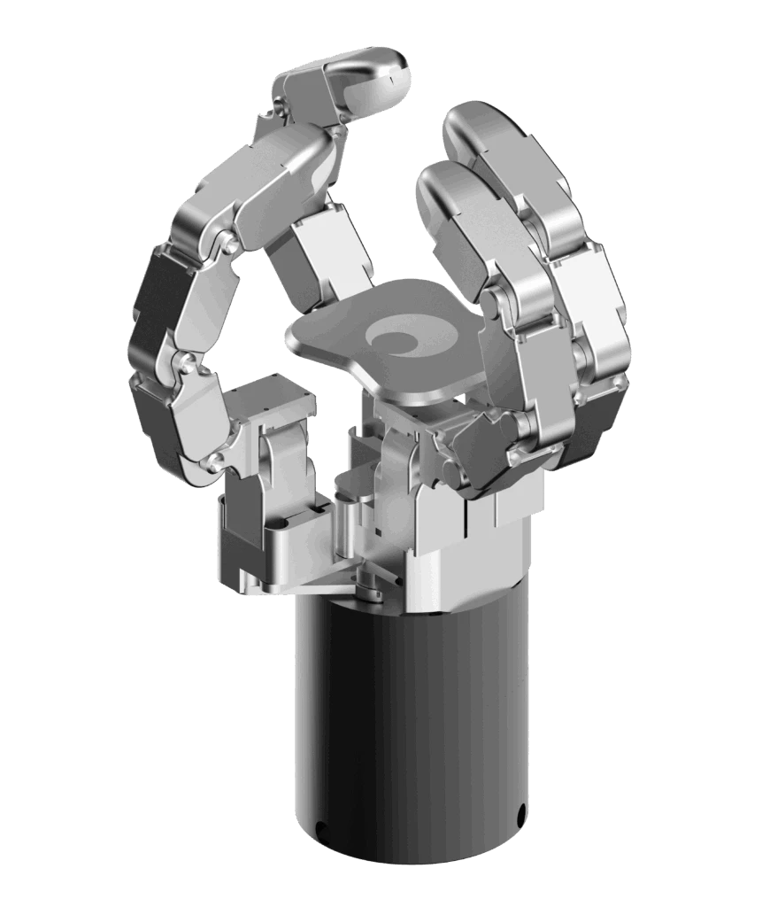

1. 작업 배경과 기록 데이터
1.1 Purpose, Existing Functions & My Work
Replay의 목적은 “이 episode를 수집할 때 내가 조작한 움직임을 로봇으로 다시 실행해 보는 것”입니다. 학습 모델의 새로운 행동을 추론하는 경로가 아니라, 이미 저장된 joint·task target·end-effector 데이터를 현재 장비에 적용하는 경로입니다. 로봇이 기록과 다른 위치에 서 있거나 장치의 소속이 바뀌면 같은 숫자를 보내도 같은 동작이 되지 않습니다.
기존 Visualization에는 그래프·표·RGB·Pika 데이터를 함께 살펴보는 playback이 있었습니다. 저는 여기에 실제 로봇 Replay의 backend manager, API, 실행·정지와 진행 상태 연결을 추가하고, 초기 정렬·시간축·장치 명령을 보강했습니다. 이후 리팩토링된 앱에서는 기존 Replay를 application runtime 소유로 이식하고 다중 로봇과 split 서비스에서 다시 연결했습니다. 로봇 SDK·기존 motion helper·그리퍼와 핸드 adapter·viewer는 활용했습니다.
| 경로 | 입력 | 실행 주체 | 결과 |
|---|---|---|---|
| Local playback | 저장된 그래프·영상·Pika frame | 브라우저와 viewer | 기록 탐색용 cursor 이동 |
| Robot Replay | 선택한 raw episode의 motion / EE stream | backend Replay job | 실제 로봇·엔드이펙터 명령 |
| Policy inference | 현재 observation과 학습 checkpoint | 모델 runtime | 모델이 예측한 새 action |
구현과 회귀 검사는 AI의 도움을 받아 진행하고, 실제 장치에서 나타나는 현상과 원하는 실행 순서를 제공하며 동작을 확인했습니다. 특히 초기 자세 이동은 본 재생과 별개의 단계라는 요구와, DG-4F의 기존 관절 기록을 활용하자는 판단이 구현 방향을 바꿨습니다.
1.2 Execution Architecture & Authority
UI는 dataset·요청 속도·Start/Pause/Resume/Stop의 의도를 전달합니다. backend는 raw source를 열고 실행 계획을 만든 뒤 별도 thread에서 초기 정렬과 재생을 수행합니다. 브라우저가 차트의 row나 cursor를 읽어 로봇 명령을 직접 만들지는 않습니다. 그래프와 영상은 backend가 처리한 소스 위치를 따라갑니다.
Replay manager는 상태 snapshot과 pause/stop event를 관리합니다. 실제 호출은 RobotWorker와 기존 adapter로 내려가며, 반환 오류와 controller의 명령 거절을 확인합니다. 명령 요청 성공과 목표 도달은 구별합니다. 초기 정렬은 readback으로 도달을 확인하지만, 재생 중 진행률은 처리한 소스 sample 위치를 나타냅니다.
split 배포에서 Replay API는 data-studio에 있고 로봇 등록은 device-data가 소유합니다. 필요한 등록 정보가 없으면 device-data에서 읽어와 Replay 실행에 사용합니다. 같은 저장 폴더나 같은 Python class 이름을 쓰더라도 컨테이너 사이에서 열린 worker 객체와 메모리가 공유되는 것은 아닙니다. 이 경계의 복구 과정은 4.3에서 설명합니다.
1.3 Raw Episode: Meaning, Units & Ownership
실행 기준은 선택한 dataset에 연결된 raw HDF5입니다. backend는 이미지를 제외한 sample과 metadata를 읽어 motion·end-effector stream을 추출합니다. 초기 target을 찾기 위해 파일을 읽는 것과 기록 시간축을 재생하는 것은 다릅니다. 정렬 전에도 source 파싱은 필요하지만, 아직 다음 sample을 로봇에 보내거나 cursor를 진행시키지는 않습니다.
| 기록 | 의미 / 단위 | 용도 |
|---|---|---|
| proprio.q / qdot | 기록된 관절각 deg / 관절속도 deg/s | 초기 joint target, joint fallback; live 값과 정렬 판정 |
| proprio.arm.p 및 segment pose | robot task 좌표의 위치·자세, 기존 adapter의 mm·degree 계약 | single-arm pose fallback 또는 segment target |
| control.*.teleop_command | 수집 당시 task-space 명령 | task Replay의 명령 입력; zero placeholder 구별 |
| control.gripper.position_target / force_target | attachment가 정의한 위치·힘 target | canonical gripper 재생; 물리 단위는 adapter 계약을 따름 |
| hand.tesollo.<hand>.feedback.joint_pos_deg | 기록된 손가락 관절 모양, degree | joint_move_to로 자세 변화 재현 |
| hand command의 mode / force / state | grasp recipe·설정·명령 의도 | joint shape와 별도로 grasp/release 실행 |
| timestamp / control timestamp | source sample 시각과 제어 시각, seconds | 재생 상대 시간과 source index 유지 |
다중 로봇 raw 데이터는 robot.<key>.*로 구분됩니다. 하나의 sample에서 해당 robot namespace만 투영하되 공통 sample 시각은 유지합니다. 구형 single-robot 데이터는 metadata에 robot key가 있어도 stream이 top-level에 있을 수 있어 이를 호환 처리했습니다. 키를 자르는 일이 아니라, 어떤 로봇의 어느 값인지 유지하는 작업입니다.
task pose는 해당 로봇의 기존 task-frame·segment 계약을 그대로 사용합니다. 저장된 값이 있다고 다른 로봇 base나 다른 tool frame으로 자동 변환되지는 않습니다. 관절 수, segment 순서, 좌우와 attachment 소속을 함께 확인해야 하는 이유입니다.
1.4 Replay Plan & Compatibility Checks
Start 요청을 받으면 raw 파일과 sample을 확인하고, 대상 로봇·세션과 motion mode를 정합니다. 실행 중인 Replay thread가 있으면 중복 시작을 거절하고 수집 종료 처리 중에도 시작을 막습니다. 이 준비 단계에서 장비와 데이터를 연결할 수 없는 경우 실행 thread로 넘기지 않고 blocker를 반환합니다.
| 항목 | 판단 | 실패 / 표시 |
|---|---|---|
| Source | raw 파일 경로·읽을 sample·사용 가능한 joint/task stream | source 없음·실행할 motion 없음 |
| 단일 로봇 | 요청한 로봇 또는 기록의 대상·현재 연결 정보 | 선택 대상이나 연결 정보 없음 |
| 다중 세션 | session mode·참여 로봇·순서·robot key | 누락·추가 참가자·순서 mismatch |
| 다중 robot / EE 계약 | model/type·joint dimension·필수 EE category·hand profile/joint count | 대상별 blocker와 warning |
| 실행 경로 | usable task command 유무와 joint fallback | 로봇별 replay mode와 결과 row |
다중 세션은 화면의 active robot 한 대만 골라 실행할 수 없습니다. 데이터에 기록된 참여자와 순서가 실제 세션과 맞아야 하고, 각 로봇의 stream과 장치 소속이 구체화돼야 합니다. 표시 이름 차이는 warning으로 남기되 필수 모델·관절·장치 계약의 불일치는 blocker로 다뤘습니다. legacy 단일 경로와 다중 contract 검사의 엄격함도 동일하다고 가정하지 않았습니다.
이 단계의 차원 검사는 “어떤 장비를 실행할 것인가”에 대한 계약입니다. 이후 초기 정렬에서 live telemetry 14개와 recorded arm 값 12개를 의미 있는 공통 관절로 비교하는 문제는 별개입니다. 벡터 길이만 같게 만드는 것으로 장비 호환성을 대신하지 않았습니다.
2. 안전 로직과 원인 분석
2.1 Why Safe Logic: Establish the Recorded Start State
기록은 수집 당시의 시작 자세에서 이어지는 동작입니다. 현재 로봇이 그 위치에 없는데 첫 task target이나 다음 sample을 곧바로 보내면, 원래 작업과 무관한 시작점 간 이동이 본 Replay에 섞입니다. 초기 위치에 도달하기도 전에 task-teleop 모드와 다음 명령이 들어가면 motion 충돌까지 생깁니다. 그래서 현재 상태를 기록의 시작 상태로 맞추는 단계와, 기록을 시간 순서로 실행하는 단계를 분리했습니다.
여기서 Safe Logic은 이전 motion 정리, 초기 자세 이동, 실제 도달·정착 확인과 재생 진입 순서를 관리하는 로직입니다. q가 있으면 초기 정렬에는 joint target을 우선 사용하고, usable q가 없을 때 task pose로 보완합니다. 첫 row에 필요한 값이 없으면 처음으로 사용할 수 있는 target과 그 source index를 찾습니다.
starting/aligning에서는 progress를 재생처럼 전진시키지 않습니다. 도달과 정착을 확인한 뒤에만 필요한 task mode를 열고 running으로 들어가 새 재생 clock을 시작합니다. 이 순서가 화면과 실제 실행 모두에 적용돼야 합니다. backend만 기다리고 UI가 자체 timer로 먼저 움직이면 사용자는 이미 Replay가 시작된 것으로 보게 됩니다.
초기 개발에서는 자세 차이가 크면 시작을 차단하는 기준도 넣었지만, 요구를 다시 정리하면서 그 정책을 철회했습니다. 최종 경로의 핵심은 큰 차이를 단순 차단하는 것이 아니라 기록된 시작 target으로 이동한 후 재생하는 것입니다. 초기 차단 helper나 상수가 남아 있다는 이유로 현재 실행 정책으로 설명하지 않았습니다.
2.2 Why Earlier Fixes Did Not Resolve the Initial Stall
초기 위치로 조금 움직이다 멈추고, Replay와 Stop을 반복하면 조금씩 이동했습니다. 어떤 경우에는 시작조차 하지 않은 듯 보였고, 끝내 목표 미도달 timeout이 발생했습니다. 반면 Move Robot의 Saved Position → Joint Move에서는 같은 종류의 목표 이동이 정상 동작했습니다.
| 단계 | 확인 / 수정 | 그것만으로 충분하지 않았던 이유 |
|---|---|---|
| 기존 motion 충돌 | queue 정리·stop 요청·busy op_state 대기 | 이전 motion 충돌을 줄여도 초기 목표 유지 방식은 같았음 |
| task mode 전환 race | teleop mode 확인·특정 오류의 제한 재시도 | 첫 task command의 Invalid Mode 문제와 초기 move 중단은 별개 |
| 정렬·재생 혼재 | aligning과 running 분리, cursor 고정 | 잘못된 순서를 고쳐도 초기 move가 끝까지 가지 못함 |
| 14 live / 12 recorded | 공통 로봇 segment로 도달 비교 | 차원 오판을 고쳐도 이동 자체가 중간에 멈춤 |
| 관측·재시도 보강 | cached telemetry 우선·qdot settle·중단 후 retry | 관측과 사후 복구는 같은 target의 지속 실행을 대신하지 못함 |
| 정상 기능과 직접 비교 | Saved Position의 start/pulse와 Replay one-shot 비교 | 최종적으로 명령 실행 방식의 차이를 수정 |
처음에는 “movej가 받아들여졌으니 도달 판정이 잘못됐을 것”이라고 범위를 좁혔습니다. poll 방식을 바꾸거나 timeout·retry를 강화했지만 동일한 현상이 반복됐습니다. direct controller 조회가 이동에 영향을 줄 수 있다는 가설도 검토했으나, 그것만을 최종 원인으로 확정하지 않았습니다.
전환점은 정상 동작하던 Saved Position을 버튼부터 backend까지 따라간 비교였습니다. UI는 누르는 동안 약 100 ms마다 pulse를 보냈고, backend는 start와 pulse 모두 같은 absolute joint move로 처리했습니다. Replay는 한 번 target을 보낸 뒤 telemetry만 관찰했습니다. 같은 API와 같은 target을 썼어도, 명령이 유지되는 시간적 의미가 달랐습니다.
2.3 Fix: Match Saved Position Hold / Pulse Semantics
Replay backend에서 첫 초기 move를 보낸 후, 도달 대기에 동일 start target을 재발행하는 callback을 연결했습니다. 위치가 아직 맞지 않으면 약 0.1초 cadence로 같은 목표를 유지합니다. 미도달 상태에서 잠깐 멈춘 경우에도 callback으로 같은 목표를 다시 보냅니다. 목표를 새 위치로 바꾸거나 HDF5의 다음 sample을 미리 소비하지는 않습니다.
명령 발행에는 Saved Position과 공통인 absolute joint dispatch를 사용했습니다. 요청이 성공했어도 controller 반환값이 거절이면 실패로 다루고, 처음부터 motion에 들어가지 못한 경우와 시작 후 목표 전에 멈춘 경우를 나눴습니다. 특정 motion-busy 오류만 제한적으로 처리하고, timeout이나 다른 실패는 숨기지 않습니다.
위치가 허용 범위에 들어오면 pulse를 멈추고 정착 조건을 확인합니다. 그 뒤에만 본 Replay를 시작합니다. 반복 command와 관찰 loop의 cadence는 일반 Python 실행·RPC 조건에 영향을 받으므로 이를 servo 주기라고 부르지 않았습니다. 또한 이 해결은 당시 장비와 앱의 Saved Position 실행 의미를 일치시킨 것이며, 모든 로봇의 movej가 반드시 재전송을 요구한다는 결론은 아닙니다.
이 변경 뒤 실제 확인에서 초기 위치로 이동한 후 재생이 시작되는 문제가 해결됐습니다. 앞선 수정들은 서로 다른 오류를 보완했지만, 마지막에는 “더 정확히 기다리기”보다 무엇을 어떤 방식으로 실행하고 있는지를 맞추는 수정이 필요했습니다.
2.4 Readback, Joint Projection & Settling Criteria
단순히 op_state가 idle로 돌아왔다고 도달로 판정하면, 목표 전에 멈춘 상태도 완료가 됩니다. live 관절과 recorded start target을 비교하고, 읽을 수 있는 qdot와 motion 상태를 함께 확인했습니다. 위치 오차는 비교 대상 관절 집합 J에서 가장 큰 절대 차이로 계산합니다.
| 조건 | 값 / 판단 | 뜻 |
|---|---|---|
| 위치 | e_q ≤ 1° | 비교 관절 모두 시작 target 허용 범위 |
| 속도 | 유효한 qdot가 있으면 v_q ≤ 3°/s | 목표를 지나가는 중인 상태와 정착 구별 |
| motion | busy state 해제 | 명령 처리 중 상태와 겹치지 않음 |
| 유지 시간 | 조건이 연속 0.25 s 유지 | 한 번의 readback 통과만으로 시작하지 않음 |
| nominal loop | poll 0.05 s / pulse 0.1 s | 관찰과 목표 유지의 서로 다른 cadence |
14개 값과 12개 관절의 비교
당시 live q에 14개 값이 있고 기록에는 양팔 12개 값이 있어, 길이를 완전히 같게 요구하면 도달 실패로 끝났습니다. 로봇 metadata의 segment slice를 사용해 양쪽에 존재하는 관절을 대응시켜 비교했습니다. live 벡터 길이가 14라는 사실을 기계적으로 14 DOF라는 뜻으로 해석하지 않았습니다. 구현에는 공통 prefix 호환 fallback도 있으므로, 이를 임의의 로봇 조합을 안전하게 대응시키는 일반 해법으로 쓰지는 않습니다.
cache와 누락 필드의 의미
정렬 중에는 worker의 최신 cached snapshot을 우선 사용하고 필요할 때 direct control read로 내려갑니다. 기본 cache age 판단은 0.6초입니다. 다만 refresh가 실패하면 cache를 반환하는 경로가 있고, qdot나 op_state가 없는 호환 경로는 해당 조건만으로 무조건 실패시키지 않습니다. 따라서 위 기준은 정상 readback에서의 판정이며 항상 모든 필드와 신선도가 강제 보장된다는 뜻은 아닙니다.
q가 없는 경우의 task pose 정렬
pose fallback은 위치 거리 5 mm 이내와 회전 성분 차이의 최댓값 2° 이내, motion-clear와 정착 유지를 확인합니다. 회전 비교는 기존 Euler 성분의 직접 차이이며 SO(3)의 최단 회전각 계산은 아닙니다. 이 판정 구현과 표현의 범위를 유지했습니다. 위 수치는 해당 구현의 기준이지 별도로 최적화 실험을 해 얻은 성능 수치가 아닙니다.
3. 실행 시간축과 말단 장치
3.1 Recorded Task Replay & Joint Fallback
초기 정렬에 q를 우선 사용하는 것과 본 Replay를 joint로만 수행하는 것은 다릅니다. 최종 실행 경로는 usable task command가 있으면 task Replay를 선택하고, 없을 때 joint trajectory로 내려갑니다. 개발 중 q 우선 재생을 시도한 시점도 있었지만, 텔레오퍼레이션 command를 재생한다는 요구에 맞춰 task 우선으로 다시 정리했습니다.
| 구분 | Task Replay | Joint fallback |
|---|---|---|
| 입력 | segment pose / usable teleop target | proprio.q에서 선택한 joint frame |
| 진입 | 정렬 후 task-teleop mode 확인 | 초기 q 정렬 후 joint target 실행 |
| 명령 | segment별 absolute task teleop | 공통 absolute joint dispatch |
| 대기 | source control 시각 우선 schedule | 이전 motion readiness + frame timestamp schedule |
| index | 원본 sample index | 선택 frame 안에 원본 sample index 유지 |
| EE | 같은 source sample의 gripper / hand | frame 선택 때 EE 변화도 보존 |
single-arm raw에는 control.arm.teleop_command가 0으로 채워진 placeholder인 경우가 있었습니다. 이를 실제 절대 pose로 보내지 않고 유효한 recorded proprio.arm.p를 target으로 사용할 수 있게 했습니다. segment와 legacy arm-index 형식도 구분했습니다. 이것은 해당 저장 형식의 placeholder 해석이며, 모든 좌표 0을 로봇 명령으로 사용할 수 없다는 뜻은 아닙니다.
joint fallback에서는 모든 sample에 blocking movej를 무조건 보내지 않습니다. 기본적으로 약 0.25초 간격을 기준으로 frame을 선택하되, 큰 joint 변화나 gripper·hand command·hand joint 변화가 있으면 중간 frame도 보존하고 마지막 frame을 남깁니다. 선택 frame에는 원래 sample index를 넣어, frame 수가 줄어도 UI의 source timeline이 짧아지지 않게 했습니다.
task Replay 진입은 mode 요청 직후 곧바로 성공으로 보지 않고 controller의 task-teleop 상태를 기다립니다. 초기 pose 이동 뒤 Invalid Mode나 teleop 시작 오류가 발생한 경로에는 제한 재시도를 넣었습니다. 같은 sample을 다시 시도하는 것과 다음 sample로 넘어가는 일을 구별해, 시작 race가 데이터 건너뛰기로 이어지지 않도록 했습니다.
3.2 Source Clock, Dispatch Cost & Pause
각 명령을 보낸 뒤 기록의 Δt만큼 다시 기다리면, 명령 전송과 장치 호출에 쓴 시간이 매 sample마다 더해집니다. 그래서 다음 sample의 source 상대 시각을 누적 deadline으로 삼고, 이미 사용한 실행 시간을 뺀 나머지만 기다리도록 했습니다. task·다중 세션은 control monotonic timestamp를 우선하고, joint frame은 기록 timestamp와 원본 index를 유지합니다.
τ는 같은 source 시간축의 sample 시각이고 T는 backend의 perf_counter입니다. P는 이 job에서 실제로 기다린 pause 구간의 누적 시간입니다. source와 실행 clock의 절대값을 서로 빼지 않고 각각의 상대 경과 시간을 비교합니다. 코드에서는 pause가 끝날 때 시작 기준에 그 시간을 더해 같은 효과를 냅니다.
예를 들어 다음 source 목표 시각이 시작 후 0.5초이고, 명령 처리까지 0.2초를 썼다면 나머지 0.3초만 기다립니다. 단순 Δt sleep은 0.2초에 0.5초를 더해 0.7초가 됩니다. 이 숫자는 계산 설명용 예이며 실측 결과가 아닙니다. 명령 호출이 deadline보다 늦게 끝나면 추가 대기 없이 다음 sample로 진행하지만, 밀린 sample을 무조건 버려 최신값으로 건너뛰는 정책은 아닙니다.
timestamp가 없거나 올바른 간격을 만들 수 없으면 metadata의 sample period와 fallback 간격을 사용합니다. 요청 velocity ratio는 clamp·scale을 거쳐 motion API에 전달되지만, source timestamp를 그 비율로 나눠 전체 시간축을 늘이는 구현은 아닙니다. 따라서 이동 속도 비율, 명령 dispatch 시각, 실제 관절 추종은 서로 다른 값으로 봐야 했습니다.
source와 actual 비교에서 고친 기준
실행 결과를 다시 수집한 actual 파일에는 사용자가 Data Collection의 Start와 Stop을 누르는 여유 구간도 포함됐습니다. 파일 전체 길이 차이만 보고 Replay가 느리다고 판단했던 분석은 철회하고, 같은 동작 구간을 정렬한 뒤 source·actual의 q/p와 장치 명령을 비교하는 기준으로 바꿨습니다. 전체 파일 길이와 재생 구간의 시간 오차를 혼동하지 않는 것이 필요했습니다.
3.3 Gripper Routing, Channel Order & First Commands
팔이 움직여도 gripper가 빠지면 기록한 작업을 재현한 것이 아닙니다. 초기 구현은 legacy control.gripper만 읽었지만 실제 raw의 canonical position_target / force_target도 읽도록 확장했습니다. canonical target이 있으면 이를 우선하고, 없을 때 legacy open/close 값을 사용했습니다.
Dual NURI에서 좌우가 뒤집힌 수정도 있었습니다. tool-index 순서를 그대로 raw gripper 채널 순서로 해석했지만, 실제 수집은 [left, right] 순서였습니다. 저장 경로와 parser를 다시 맞춰 좌우를 복구했습니다. target은 현재 robot의 gripper attachment 중 arm/channel에 맞는 대상으로 연결합니다. controller의 tool 번호, raw 배열의 위치, runtime attachment의 소속은 같은 번호 체계가 아니었습니다.
첫 명령이 빠지는 문제는 중복 억제 기준과 연결돼 있었습니다. runtime entry에 남은 예전 last-command를 그대로 보면 이번 재생에서 한 번도 보내지 않은 동작이 “이미 실행됨”으로 생략될 수 있습니다. Replay마다 last-sent 상태를 새로 만들고, 그 재생에서 값이 바뀌었는지를 기준으로 하위 sender에 force dispatch했습니다. 첫 sample의 gripper·hand 동작도 다시 전달되게 했습니다.
한 sample 안에서 arm 뒤에 gripper·hand를 처리하므로, 장치 호출의 실패나 지연은 다음 sample 진행에도 영향을 줍니다. 이를 “그립 성공을 물리적으로 확인한 다음에만 다음 action으로 간다”는 완료 gate와 혼동하지 않았습니다. 당시 문제는 채널 해석·attachment 매칭·호출 결과와 처리 시간의 경로를 나눠 조사해야 했습니다.
3.4 DG-4F: Replaying Shape and Grasp Intent

손가락과 기저 관절의 구성이 달라지는 핸드이므로 open/close 하나만으로 모든 자세를 표현할 수 없습니다. 공식 제품 사진이며 내부 작업 영상이나 실기 결과 사진은 아닙니다.
DG-4F에서는 home·zero·좌우형 손 모양과 여러 grasp를 수행했는데, Replay는 같은 grip만 반복하는 문제가 있었습니다. 초기 parser가 grasp state·mode·force만 보았고, 해당 기록의 mode가 미지정 값이면 새 recipe를 설정하지 않은 채 현재 mode로 grasp했기 때문입니다. 이것은 단순 open/close를 손 모양 전체로 취급한 해석의 한계였습니다.[T1]
저는 이미 HDF5에 있는 feedback.joint_pos_deg를 Replay target으로 사용하자는 방향을 제시했습니다. 기록된 손 모양은 joint_move_to로 재현하고, 유효한 mode ID와 grasp state는 기존 command 키에 유지했습니다. home/zero라는 새 event 이름을 무조건 추가하기보다, 이미 저장된 관절 자세와 별도로 필요한 grasp 의미를 나눠 보존했습니다.
| 기록 | 재생 | 해석 |
|---|---|---|
| feedback joint_pos_deg | 기록된 joint shape → joint_move_to | 관절 모양 재현; 원래 버튼 이름을 추측하지 않음 |
| 양의 grasp_mode_id | 지원 profile 확인 후 mode 적용 | 어떤 recipe를 선택했는지 유지 |
| 비양수 / 없는 mode | 명시적 mode 변경으로 쓰지 않음 | 기록에 없는 recipe를 새로 만들어내지 않음 |
| grasp_force / grasp_state | force 설정 후 release 또는 grasp | 설정과 action 의도; 물체 접촉 결과와 구별 |
같은 sample에 joint shape와 grasp command가 모두 있으면 관절 목표를 먼저 처리하고 mode·force·grasp 경로를 이어서 처리합니다. 두 경로는 완전히 배타적인 선택지가 아닙니다. 관절 이동 시간은 sample 간격을 ms로 바꿔 전달하고, 실제 owner robot 안에서 hand runtime을 해석합니다.
runtime ID가 달라진 기록에는 호환 매칭도 필요했습니다. 일치하는 현재 hand를 먼저 찾고 남은 대상이 명확한 경우 대응시키는 경로를 사용했습니다. 여러 hand의 fallback에는 순서 기반 대응도 있어, 이를 좌우 의미가 자동 증명된 것으로 해석하지 않습니다. 사용한 구성에서 실제 손 모양과 대상 연결을 함께 확인했습니다.
4. Session과 실행 단계
4.1 Multiple Robots: Shared Start Barrier & Source Index
다중 로봇은 각자 Replay 버튼을 동시에 누르는 기능이 아닙니다. 하나의 raw session에서 참여 robot과 순서를 정하고, 공통 source sample i를 각 robot stream으로 투영해 실행하는 방식입니다. 한 로봇만 먼저 시작하면 다른 로봇이 아직 초기 위치로 이동하는 동안 기록이 진행될 수 있어, 모든 참가자의 정렬 완료를 재생 시작 조건으로 묶었습니다.
각 worker와 시작 target을 준비한 뒤 정렬 thread를 만들고 공통 start event를 해제합니다. 한 정렬이 실패하면 abort event로 다른 정렬에도 중단을 알리고 참가자에게 stop을 요청합니다. 모든 thread를 기다려 성공을 확인한 뒤, 필요한 task mode를 열고 세션 전체를 running으로 전환합니다.
본 실행은 하나의 source loop에서 robot별 명령을 순서대로 보냅니다. task·joint mode는 참가자마다 다를 수 있고, joint frame cursor와 EE last-sent 상태도 robot별로 유지합니다. Dual NURI의 양팔 task command는 sample에 따라 좌우 전송 순서를 번갈아 사용해 항상 같은 팔이 뒤에 놓이는 편향을 줄이는 경로가 있습니다. 이를 동시 패킷 전송이나 정량 동기 오차 0으로 표현하지는 않습니다.
참가자 실패는 해당 로봇만 건너뛰고 세션을 계속하는 방식으로 처리하지 않습니다. 세션 실행을 종료하고 모든 참가자의 idle 복귀를 시도하며 top-level 오류와 robot별 상태를 남깁니다. 정렬 실패의 즉시 stop 요청과, 실행 오류 뒤 finally cleanup은 호출 경로가 다르므로 구분해 설명했습니다.
4.2 Pause, Stop, Error & Robot Idle Cleanup
| 명령 / 상태 | backend 처리 | 유지하거나 확인할 것 |
|---|---|---|
| Pause | running에서 pause event 설정·stop motion 요청 | thread·source 위치 유지, pause 시간 제외 |
| Resume | pause event 해제·현재 loop 진행 | 처음부터 재시작하거나 새 정렬을 자동 수행하는 의미가 아님 |
| Stop | stop event 설정·pause 해제·즉시 stop 요청 | 실행 loop 종료와 cleanup 결과 확인 |
| Error | 세션 실행 중단·대상별 정리 | 원래 실패와 cleanup 실패를 함께 보존 |
| Finished / Stopped | job 종료 상태 유지 | 로봇 idle 복귀 결과와 별도로 표시 |
Stop API의 응답은 정지 요청을 받아들였다는 뜻입니다. 로봇 물리 정지가 완료됐다는 확인과 같지 않습니다. worker queue를 비우고 stop motion을 요청하며 실행 loop가 stop event를 확인하도록 했습니다. thread가 종료되는 경로에서는 idle 전환을 시도하고 실패하면 cleanup warning을 원래 오류와 함께 남겼습니다.
Replay state가 stopped 또는 finished여도 로봇 mode는 idle일 수 있습니다. 반대로 status만 finished로 바뀌었다고 마지막 target의 실제 추종 오차까지 측정된 것은 아닙니다. 명령 loop의 완료, controller 상태, 실제 물리 동작을 구별해야 UI의 진행률을 과해석하지 않을 수 있었습니다.
4.3 Split Services: Registry Read-Through, Not Shared Memory
split 배포에서는 Visualization Replay가 data-studio에 있지만 로봇 설정과 live control 상태의 소유자는 device-data였습니다. 로봇이 UI에는 등록돼 있어도 Replay process의 state가 비거나 연결 정보가 없어 “대상 로봇 없음”으로 끝날 수 있었습니다. 같은 파일을 mount한 사실이 실행 중 registry 객체까지 공유한다는 뜻은 아니었습니다.
Replay 시작 시 필요한 robot이 없거나 연결 정보가 부족하면 device-data의 robot registry를 읽어와 로컬 실행용 mirror를 갱신하도록 했습니다. 이후 Replay worker와 기존 SDK dispatch에 필요한 정보를 사용합니다. 이 mirror는 등록 소유권을 data-studio로 옮기거나 두 서비스의 열린 worker를 하나로 합치는 작업이 아닙니다.
| 항목 | 책임 | 경계 |
|---|---|---|
| raw episode·session metadata | 선택 source와 dataset 계약 | 공유 artifact를 읽되 source identity 유지 |
| 로봇 등록·attachment 설정 | device-data | Replay에 필요한 정보를 read-through |
| Replay thread·plan·pause/stop 상태 | data-studio Replay manager | job의 실행과 결과 소유 |
| controller 호출·readback | Replay의 worker / adapter 경로 | 등록 정보 조회와 장치 명령 실행을 구별 |
| cursor·graph·RGB·Pika 표시 | 브라우저 / viewer | backend 상태를 따르며 물리 명령을 만들지 않음 |
이 복구로 “로봇이 등록돼 있는가”와 “이 실행 process가 그 등록을 사용할 수 있는가”를 나눠 확인하게 됐습니다. 데이터 저장 구조가 같아도 process와 서비스 경계가 바뀌면, 기존에 우연히 공유하던 runtime 전제를 다시 명시해야 했습니다.
5. 시각화와 기술적 발견
5.1 Visualization: Source Position vs Display Interpolation
로봇은 움직이는데 progress·그래프·RGB가 뭉텅이로 갱신되거나, cursor가 실제 동작보다 뒤처지는 문제가 있었습니다. 처음에는 status를 읽는 간격이 길었고, 이후에는 잘못된 시간축과 이전 visual anchor를 계속 유지하는 방식이 원인이 됐습니다. 로봇 실행과 화면 부드러움을 한 loop로 해결하려 하지 않고 표시 경로를 따로 보강했습니다.
backend는 sample을 처리한 뒤 current_index = source index + 1로 상태를 갱신합니다. 브라우저는 이를 0-based index로 바꿔 사용합니다. status poll 사이에는 source replay time axis의 진행률을 우선 사용하고, 필요하면 관측된 backend 진행 속도를 보완값으로 씁니다. 새 status가 오면 그 값을 기준으로 anchor를 다시 잡아 이전 예측이 계속 뒤로 남지 않도록 했습니다.
| 대상 | 표시 방식 | 실행과의 관계 |
|---|---|---|
| Graph cursor / progress | fractional source 위치·픽셀 보간 | 더 부드러운 표시; 새로운 action이 아님 |
| Table / RGB frame | 가장 가까운 실제 sample index | 존재하는 기록 sample과 대응 |
| Pika viewer | 공유 index를 받아 viewer의 frame 변환 사용 | viewer와 실물 Replay API는 별개 |
| starting / aligning | local interpolation 정지·cursor 고정 | 정렬 완료 전 재생처럼 보이지 않게 함 |
| paused / terminal | animation 중단·보고된 위치 사용 | backend 상태를 기준으로 유지 |
상태 poll의 구현 간격은 120 ms이고, poll 사이 animation은 requestAnimationFrame으로 처리합니다. 표시용 runahead에도 상한을 둡니다. 이는 샘플 dispatch 시각이나 실제 관절 도달을 측정하는 센서가 아닙니다. cursor를 매끄럽게 만든 것과 로봇 추종을 정확하게 만든 것은 별도 검증 대상입니다.
5.2 Verification & Confirmed Operation
테스트에서는 fake worker·snapshot·clock으로 초기 정렬 전 재생 sender가 호출되지 않는지, pulse callback이 같은 target을 유지하는지, source 시간에 남은 대기만 하는지, EE 변화가 frame 선택에서 빠지지 않는지 검사했습니다. 실제 장치에서는 초기 위치 이동 이후에만 본 Replay가 시작되는지와 팔·엔드이펙터 동작을 확인했습니다.
| 확인 대상 | 내용 | 결과의 의미 |
|---|---|---|
| 초기 정렬 | Saved Position과 command 방식 비교·pulse 적용 후 도달 확인 | 반복되던 초기 이동 중단 문제 해결 |
| Source / parser | task 우선·joint fallback·placeholder·canonical EE·shape 해석 | 실행에 필요한 데이터 의미 보존 |
| 시간과 화면 | 누적 deadline·pause 제외·source index·표시 보간 | 실행 시간축과 viewer 진행 기준 정리 |
| 그리퍼 / DG-4F | 좌우 channel·첫 명령·joint shape와 grasp 의도 | 팔 외 장치도 Replay에 연결 |
| 실제 사용 구성 | 사용한 로봇·엔드이펙터·텔레옵 수집 구성과 다중 로봇 | 해당 구성에서 정상 Replay 동작 확인 |
source와 actual을 비교할 때는 실제 Replay 구간을 정렬하고 q/p·장치 event를 함께 확인해야 합니다. 사용자 수동 수집 구간을 포함한 전체 duration이나 부드러운 cursor만으로 동기화 성능을 수치화하지 않았습니다.
장기 운용·새 로봇 조합을 추가할 때는 같은 구조를 바탕으로 초기 readback 품질, owner 대응, 단위·frame·시간축을 다시 확인해야 합니다. 상태 표시만 보강하는 것보다 실행 경계와 실제 동작을 함께 확인하는 기준을 유지했습니다.
5.3 Engineering Note
이 문제를 통해 명령이 접수됐다는 사실과 의도한 동작이 끝났다는 사실 사이에 실행 계약이 있다는 것을 배웠습니다. 초기에는 대기와 도달 판정을 계속 고쳤지만, 정상 기능과 비교해 보니 같은 목표를 한 번 보내는 것과 유지하며 보내는 것은 다른 동작이었습니다. 결과를 감시하는 코드보다 먼저, 정상 경로가 무엇을 보장하는지 끝까지 따라가야 했습니다.
그리퍼 좌우를 뒤집었던 경험에서는 숫자의 위치보다 데이터가 만들어진 경로를 먼저 봐야 한다는 점을 다시 확인했습니다. tool 번호와 저장 채널을 같은 의미로 해석하면 호출은 성공해도 반대 손이 움직일 수 있습니다. 배열 크기뿐 아니라 owner·단위·순서·시간의 의미를 유지하는 일이 기능 재사용의 전제였습니다.
또한 화면의 부드러움과 물리 실행의 정확함을 구분하게 됐습니다. 실제 실행은 backend의 source clock과 장치 결과로 확인하고, 브라우저 보간은 그 상태를 이해하기 쉽게 보여 주는 데 사용했습니다. 기능을 완성한다는 것은 버튼이 동작하는 것에서 끝나지 않고, 시작 조건·실행 책임·완료의 의미를 연결해 설명할 수 있는 상태를 만드는 일이었습니다.
References
- [T1] Tesollo — DG-4F
관절 모양·그립 모드를 가진 핸드의 제품 구조 참고. MiMicX Replay parser·실기 결과와 구분하며, 제조사 성능 수치를 Replay 측정값으로 사용하지 않습니다.